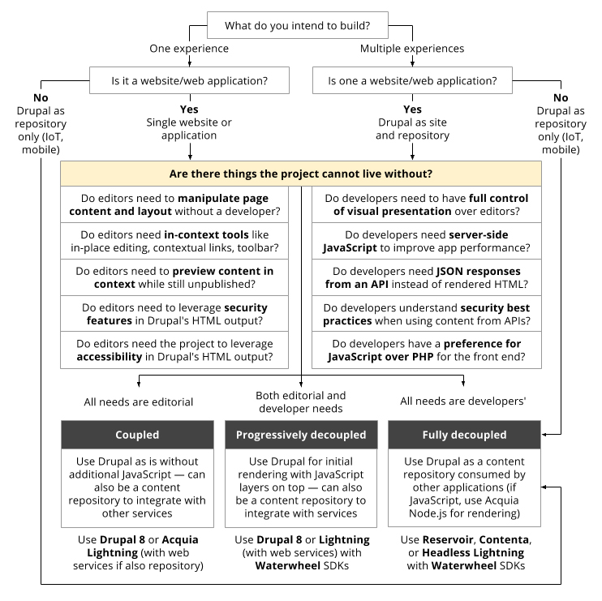

Contenta CMS
Decoupled Drupal Starter Kit
Stephan @ Ramsalt.com
What is Decoupled Drupal?
- Drupal used as a content hub / backend
- Can be consumed and manipulated by other applications
What is Decoupled Drupal?
- Data will be exposed via…

Reservoir vs. Contenta CMS
Oh no! Can't we just work together?
Puh… indeed they are.
Both distributions are utilizing the same contrib modules!
Contenta CMS
The community-driven decoupled distribution
Decoupled challenges
And how Contenta CMS solves them…
How to provide data?
- JSON API
Can i get rid off Drupalism's?
- JSON API Extras
Where is my API documentation?
- OpenAPI
Can I restrict access to my API?
- Simple oAuth
- Consumers
Original images are huge! Can I get image styles?
- Consumer Image Styles
The client wants to define the frontend routes
- Decoupled Router
Demo time…
Should I use Decoupled Drupal?
Well, it depends…
Should I use Decoupled Drupal?

Source: https://dri.es/how-to-decouple-drupal-in-2018